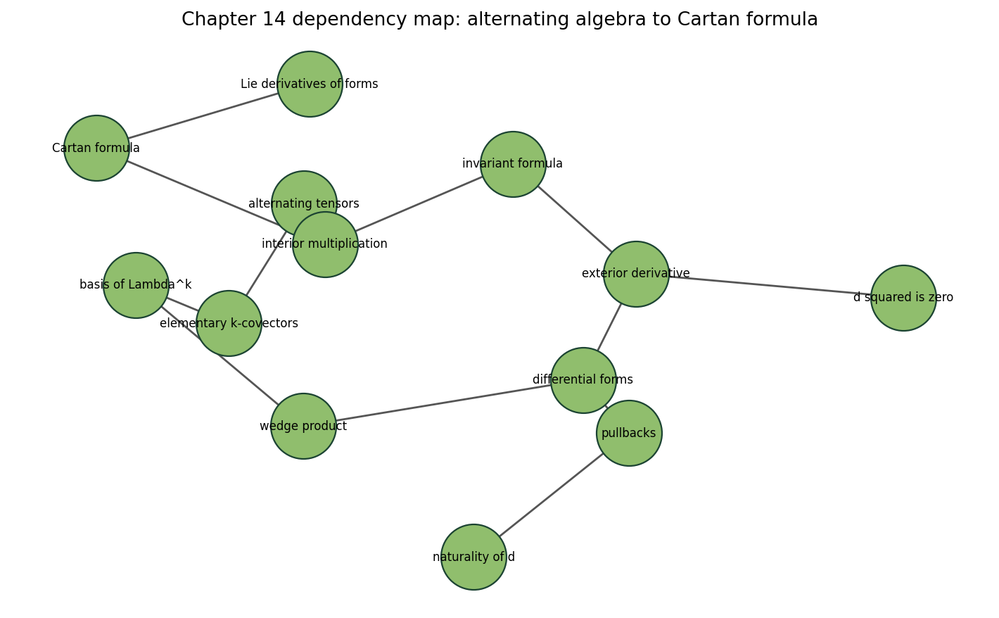
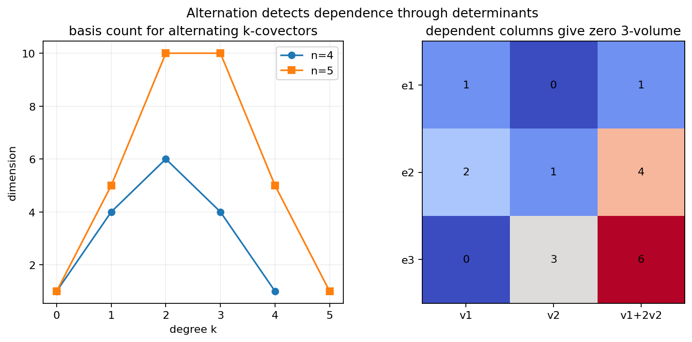
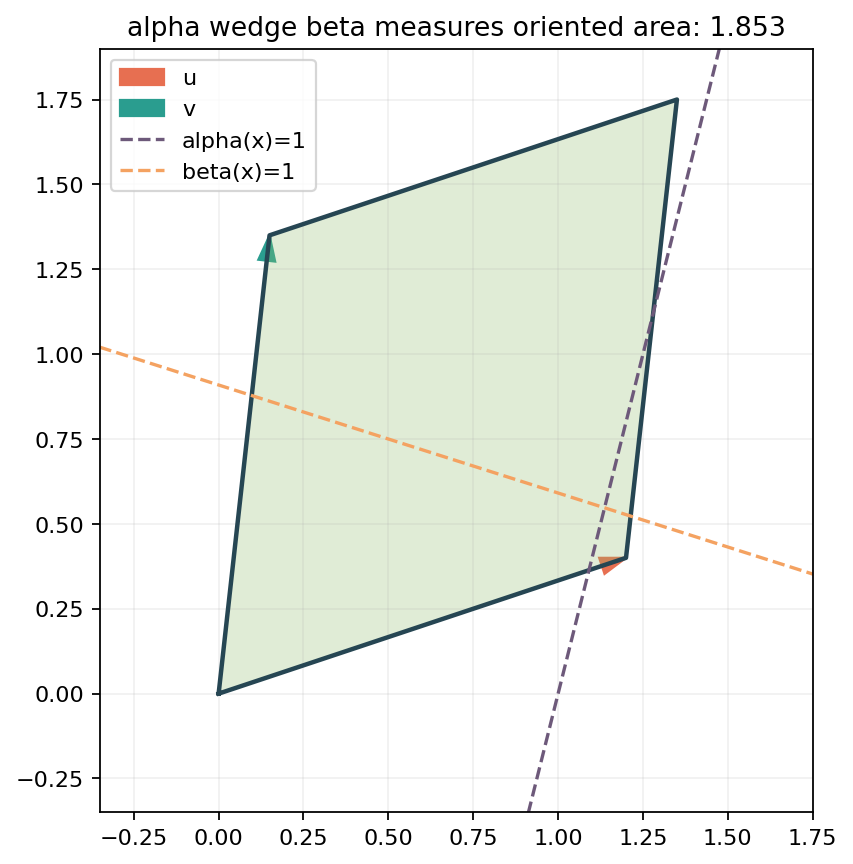
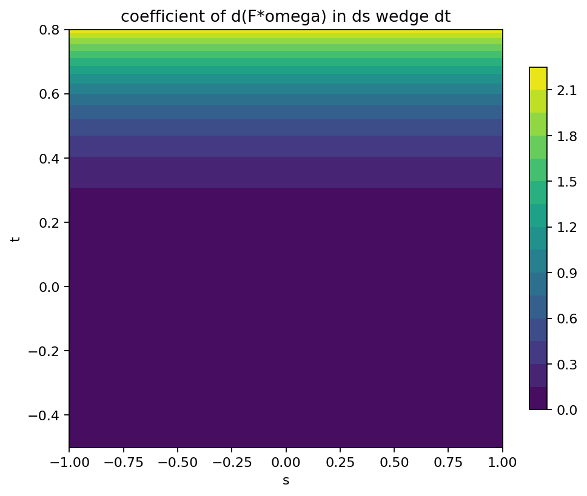
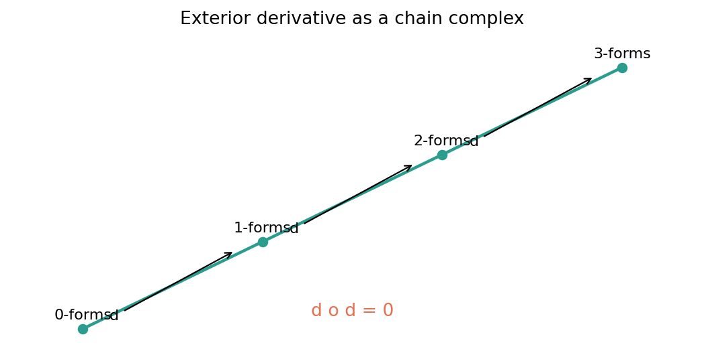
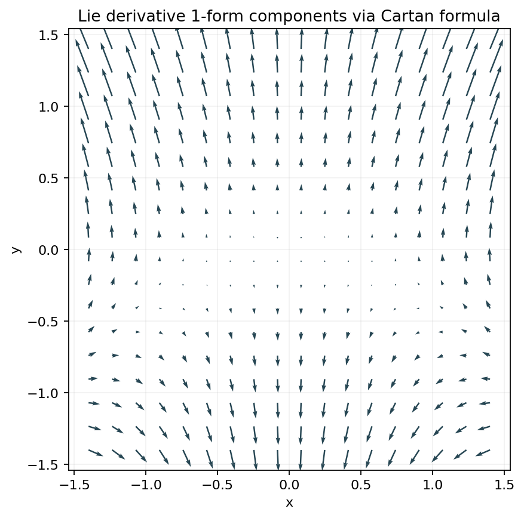

Chapter 14
Differential Forms
Alternating algebra becomes calculus on smooth manifolds: wedge products, pullbacks, exterior derivatives, and Lie derivatives of forms.
Alternation
dependent inputs vanish; basis counts become binomial.
Geometry
wedge products measure oriented area and volume.
Calculus
pullback, d, contraction, and flow fit together.
Notebookchapter-14-differential-forms/14-differential-forms.ipynb
Source Spanprinted pages 349-376
Geometry Atlas lecture deck
Proof Itinerary
Alternation Is The Route Into Manifold Calculus
p. 349-376

1Alternating tensors make determinant-style measurements.
2Wedge product packages signs and basis bookkeeping.
3Differential forms vary smoothly over the manifold.
4Pullback and exterior derivative are natural operations.
5Contraction plus d yields Cartan formula for Lie derivatives.
Notebook Check
Paths exist from alternating tensors to Cartan formula and from differential forms to d squared is zero.
Artifact: forms-concept-dependency.png
Alternating k-Covectors
Antisymmetry Shrinks The Basis To Increasing Multi-Indices
Definition
An alternating k-tensor changes sign when two inputs are swapped and vanishes when the input list is linearly dependent.
Basis Count
dim Λk(Rn) = C(n,k)
| n | k | dim Λk | Reading |
|---|---|---|---|
| 3 | 2 | 3 | coordinate area forms |
| 4 | 2 | 6 | six independent planes |
| 5 | 3 | 10 | volume slots by triples |
| 6 | 3 | 20 | peak middle degree |
Inspection Target
The artifact check reports all dimension counts match binomial values, and a dependent 3-column determinant equals 0.

Artifacts: alternating-basis-counts.png, alternating-basis-dimensions.csv
Wedge Product
The Product Measures Oriented Area, Not Just Symbolic Degree

For 1-Forms
(α ∧ β)(u,v) = α(u)β(v) - α(v)β(u)
Determinant Reading
The wedge product takes two measurement rows and returns their signed determinant on the vector pair.
| Input Pair | Value | Meaning |
|---|---|---|
| (u, v) | 1.8525 | chosen orientation |
| (v, u) | -1.8525 | orientation reversed |
| (u, u) | 0 | repeated direction |
Common Error
Treating α∧β as ordinary multiplication loses the sign change that makes integration orientation-sensitive.
Artifact: wedge-product-oriented-area.png
Forms And Pullbacks
Forms Pull Back Along Maps And Exterior Derivatives Follow Them
Differential Form
A k-form assigns to each point a smoothly varying alternating k-covector on the tangent space at that point.
Naturality
F*(dω) = d(F*ω)
Concrete Check
For F(s,t) = (st, exp(t)) and ω = (x2 + y) dx + xy dy, both sides give t(exp(t) - 1)exp(t) in ds ∧ dt.
pullback is contravariant
residual = 0
degree is preserved by F*

Heat map of the shared ds ∧ dt coefficient in the symbolic pullback computation.
Artifact: pullback-commutes-with-exterior-derivative.png
Exterior Derivative
The Canonical Derivative Raises Degree By One
On Functions
f = x2y + sin(z)
df = 2xy dx + x2 dy + cos(z) dz
df = 2xy dx + x2 dy + cos(z) dz
On A 1-Form
ω = xy dx + yz dy + xz dz
dω = -x dx∧dy + z dx∧dz - y dy∧dz
dω = -x dx∧dy + z dx∧dz - y dy∧dz
Graded Product Rule
The notebook check verifies d(gf) - g df - f dg has zero residual components in the coordinate example.
Why This Operator Is Special
It is defined without a metric, connection, or orientation. Coordinates can compute it, but the result is intrinsic.
Degree 0functions measure scalar data at points.
Degree 11-forms measure tangent directions.
Degree 22-forms measure oriented parallelograms.
Top Degreevolume forms are ready for integration.
Sign Discipline
The alternating signs are not notation overhead. They are what make the next identity, d squared equals zero, possible.
Check: exterior-derivative-chain-checks.json
Chain Complex
The Identity d Squared Equals Zero Is Cancellation By Alternation

Function Checkd(df) has zero dxdy, dxdz, dydz components.
1-Form Checkd(dω) has zero 3-form coefficient.
Reasonmixed partials cancel after antisymmetrization.
Structural Identity
d ˆ d = 0
Proof Roadmap
Differentiate once to get all first partials. Differentiate again to get mixed second partials. Each pair appears in both orders, and the wedge sign subtracts them.
Geometric Payoff
Closed forms are candidates for being locally exact, and the de Rham complex begins with this simple-looking cancellation.
Artifact: exterior-derivative-chain-complex.png
Contraction And Lie Derivative
Cartan Formula Turns Flow Change Into d And Insertion

For V = (X, -Y), the plot shows the checked Lie derivative 1-form components across the plane.
Cartan Formula
LVω = iVdω + d(iVω)
Interior Multiplication
iVω inserts the vector field V into the first argument of a form, lowering degree by one.
| Quantity | Checked Value |
|---|---|
| dω | X - 1 |
| LVω | (XY, X2 + 2Y) |
| Cartan residual | (0, 0) |
Artifact: cartan-formula-lie-derivative.png
Applied Lab
Toggle One Coefficient And Watch Closedness Appear
In-Class Prediction
ωa = aXY dX + (X2 + Y)dY
dωa = (2 - a)X dX∧dY
dωa = (2 - a)X dX∧dY
| a | dωa coefficient | Closed on plane? |
|---|---|---|
| -2 | 4X | No |
| -1 | 3X | No |
| 0 | 2X | No |
| 1 | X | No |
| 2 | 0 | Yes |
Diagnostic
For a 1-form P dX + Q dY on the plane, closedness is detected by the coefficient QX - PY.
What Students Should Notice
The only successful toggle is a = 2 because it balances the X-derivative of Q against the Y-derivative of P.
Before dthe coefficients look only mildly different.
After done scalar wedge coefficient decides closedness.
Geometryclosed means no infinitesimal circulation in this plane test.
Checkboth closed and nonclosed cases are detected.
Artifacts: learner-lab-exterior-derivative-toggle.csv/json
Recap
The Chapter Builds A Coordinate-Stable Calculus Of Oriented Measurements
Takeaways
- Alternating tensors detect oriented volume and vanish on dependent inputs.
- Elementary k-covectors are indexed by increasing multi-indices.
- Wedge product packages antisymmetry into an algebra.
- Pullback commutes with d, so the derivative is natural.
- Cartan formula expresses flow change through contraction and d.
Validation Trail
The final sanity artifact reports coverage for alternating tensors, elementary k-covectors, wedge product, forms, pullbacks, exterior derivative, invariant formula, interior multiplication, and Cartan formula.
Algebrabinomial counts and dependent determinant zero.
Geometrywedge swap changes sign, repeated input is zero.
NaturalityF star d equals d F star in the symbolic map.
Calculusd squared and Cartan residuals vanish.
Next Lecture Bridge
Once forms are available, integration on manifolds can be formulated using top-degree forms and oriented parameterizations.
Check: final_sanity.json